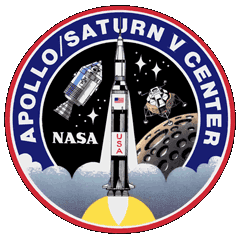
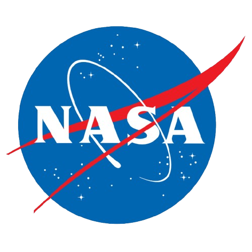

rockethub

Engines
Saturn V
The Saturn V was a retired, American, three-stage, liquid-fueled rocket that NASA developed for the Apollo program to send humans to the Moon. It was the most powerful rocket to have ever successfully flown, launched astronauts on multiple missions to orbit and land on the Moon, and also launched the Skylab space station. The Saturn V is considered one of history's greatest engineering achievements, with several existing examples on display at museums.
 